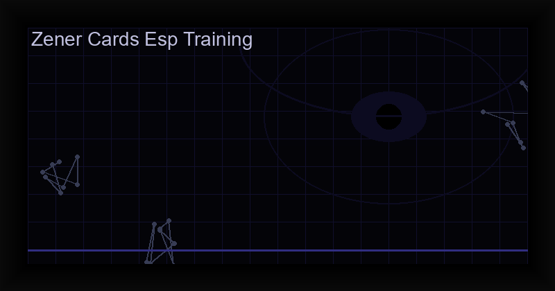

How to Use Zener Cards for ESP Training — Complete Guide (2026)
What Are Zener Cards?
Zener cards are a deck of 25 cards used to test extrasensory perception (ESP). Invented in the early 1930s by perceptual psychologist Karl Zener at Duke University, they were used extensively by parapsychologist J.B. Rhine in his famous experiments on telepathy, clairvoyance, and precognition.
The deck consists of five distinct symbols, each repeated five times: a hollow Circle, a Plus sign (Greek cross), three Wavy lines, a hollow Square, and a five-pointed Star. These simple geometric shapes were chosen to minimize cognitive associations and provide a clean, unambiguous testing environment.
Why Zener Cards for ESP Training?
The beauty of the Zener card system lies in its mathematical elegance. With five possible symbols, random guessing yields an expected accuracy of exactly 20% (5 out of 25). This provides a clear, statistically valid baseline against which to measure your intuitive ability.
If you consistently score above 20% across many sessions — say 30% or more — the probability of that being mere chance becomes vanishingly small. This is what makes Zener cards a genuine training tool rather than a vague spiritual exercise. You are not guessing; you are measuring.
The 5 Zener Card Symbols
- Circle (○): The simplest shape, representing wholeness, unity, and the cyclical nature of intuition.
- Cross (+): A symbol of intersection, decision points, and the meeting of material and spiritual worlds.
- Waves (∿): Three parallel wavy lines representing flow, intuition, and the subtle currents of psychic energy.
- Square (□): Structure, grounding, and the stable foundation from which psychic perception can emerge.
- Star (★): The pinnacle of psychic achievement — clarity, illumination, and direct knowing.
Each symbol carries a distinct energetic signature. Over time, many practitioners develop a personal "feeling" for each one — a gut-level recognition that bypasses logical analysis.
How to Run a Zener Card Test
1. Set Up Your Environment
Find a quiet space where you will not be interrupted. Dim the lights. Sit comfortably. The goal is to minimize sensory input and enter a calm, receptive state — what chaos magicians call gnosis.
2. Choose Your Mode
In traditional ESP testing, there are two primary protocols:
- Blind Testing: You guess each card without seeing the deck. This is rigorous and scientifically valid. Your phone or a partner records the actual card for comparison.
- Open Deck (Learning Mode): You see the card after each guess. This provides immediate feedback and helps you calibrate your intuition over time. Best for beginners.
3. Focus Your Intention
Take three slow breaths. Clear your mind. Set a simple intention: "I will perceive the symbol on this card." Do not force it. Let the impression arise naturally — a flash of shape, a color association, a gut feeling.
4. Record Your Results
After each guess, note the actual card. At the end of the 25-card deck, calculate your score: (correct guesses / 25) x 100 = accuracy percentage. Anything above 28% (7/25) is statistically interesting. Above 36% (9/25) is exceptional over multiple runs.
Understanding the Statistics
Probability theory predicts the following distribution for 25 random guesses:
- 3-7 correct (12-28%): 79.3% of people — normal chance operation.
- 8+ correct (32%+): 10.9% of people — potentially significant.
- 10+ correct (40%+): 1.5% of people — strongly suggestive of ESP.
- 12+ correct (48%+): 0.1% of people — highly significant.
The key is consistency. One lucky run proves nothing. Ten sessions averaging 30%+ is compelling evidence that something beyond chance is operating.
Zener Cards and Chaos Magick
In chaos magick, the Zener card deck serves double duty. It is both a training tool for psychic development and a gnosis calibration instrument. When you hit a streak of correct guesses, you know you have reached a receptive state. That state — gnosis — is the same state used for sigil charging, servitor creation, and reality hacking.
By practicing Zener card tests regularly, you are not just training ESP. You are training the ability to enter altered states of consciousness on demand — the foundational skill of all chaos magick.
Digital Tools for Zener Card Training
While you can use physical Zener cards, digital apps offer significant advantages: automated shuffling (eliminating manual bias), instant statistical tracking, session history, and the ability to practice anywhere without needing a partner.
The PSI GYM app by Cha0smagick Labs is purpose-built for this: professional-grade Zener card training with advanced analytics, multiple training modes, and a distraction-free dark interface designed for gnostic work.
Ready for the full experience?
Get PSI GYM with advanced statistical tracking, session history, and multiple training modes — all offline, no ads, one-time purchase.
Get PSI GYM: Zener Cards & ESP →Frequently Asked Questions
Are Zener cards scientifically valid?
The original Duke experiments had methodological issues, but the Zener card format itself is statistically sound as a training tool. Modern digital versions eliminate the confounds of physical cards (markings, shuffling bias).
How long until I see improvement?
Most practitioners report measurable improvement within 2-4 weeks of daily practice (one deck per day). The key is consistency and proper gnostic state management.
Can children use Zener cards?
Yes. In fact, children often score higher than adults in ESP tests because their critical faculty is less developed. The simple symbols are intuitive across ages.